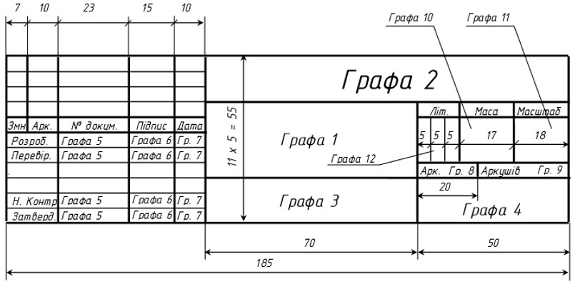
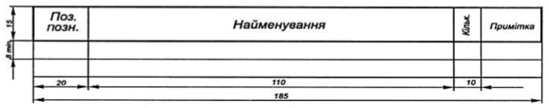
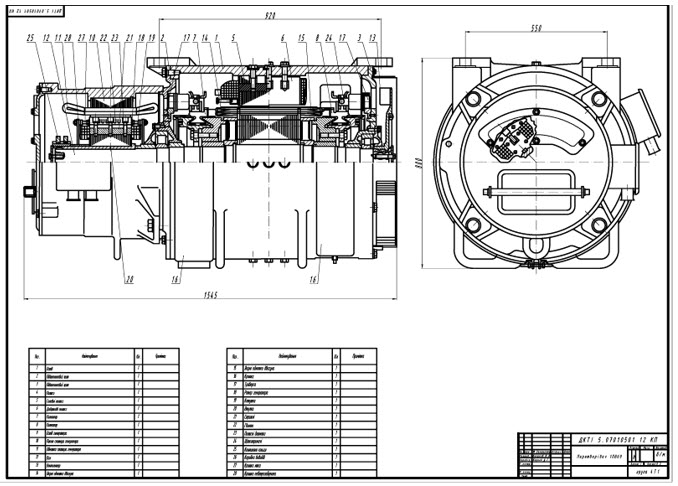
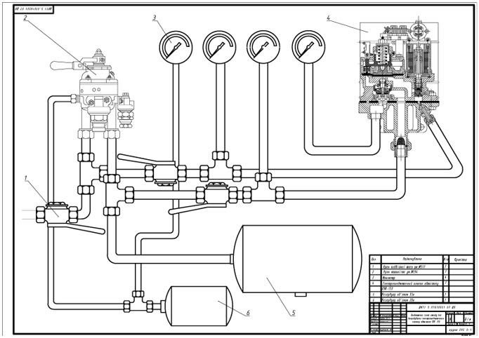

2.7 Графічна частина
Графічна
частина виконується згідно із завданням на проектування та з дотриманням вимог
ЄСКД.
Графічна
частина складається з двох креслень: вузла, що ремонтується та обладнання, яке
використовується при ремонті.
Графічна
частина оформлюється на форматі А1 (594х841). На аркушах проводиться внутрішня
рамка на відстані 20 мм від лівої сторони зовнішнього краю і на відстані 5 мм
від інших сторін. Креслення
варто
виконувати з дотриманням масштабу або без дотримання масштабу, але зі зразковим
дотриманням пропорцій.
Масштаби при виконанні креслень встановлені ГОСТ 2.302-68. Масштаби зменшення -
1:2; 1:2,5; 1:4; 1:5; 1:10; 1:15; 1:20; 1:25; 1:40; 1:50; 1:75; 1:100; 1:200;
1:400; 1:500; 1:800; 1:1000. Масштаби збільшення - 2:1; 2,5:1; 4:1; 5:1; 10:1;
20:1; 40:1; 50:1; 100:1.
Основний
напис розміщують в правому нижньому куті аркуша вздовж довгої чи вздовж короткої
сторони аркуша. Основний напис на аркушах графічної частини ф.1 (55 мм)
виконують за ДСТУ ГОСТ 2.104-2006 (рисунок 2.8).

Рисунок
2.8 – Основний напис форми 1 (графічної частини)
В
графах основного напису вказують:
а)
у графі 1 - назву виробу (креслення);
б)
у графі 2 - позначення (шифр)
креслення (шифр дивись підрозділ 2.1);
в)
у графі 3 - позначення матеріалу деталі (графу заповнюють тільки на кресленнях
деталі);
г)
у графі 4 - шифр групи, наприклад: 4Т2;
д)
у графі 5 - прізвища осіб, які
підписали документ;
ж)
у графі 6 - підписи осіб, прізвища яких указані у графі 5;
к)
у графі 7 - дата підписів документа;
л)
у графі 8 - порядковий номер листа креслення;
м)
у графі 9 - загальна кількість аркушів;
н)
у графі 10 - масу виробу; якщо масу вказано в кілограмах, тоді «кг» не пишуть, у
інших випадках розмірність указують;
п)
у графі 11 - масштаб;
р)
у графі 12 - літеру, яку надано документу (ставиться літера Н, так як цей
документ навчальний).
Основний
напис виконують олівцем. Основний напис заповнюється креслярським шрифтом (тип
Б) з висотою літер не менш ніж 2,5 мм, при машинному виконанні шрифтом Times New
Roman, розміром 10 пт, нарис звичайний вирівнювання симетрично відповідним
графам. Шрифт позначення при ручному виконанні креслення №7 (тип Б), при
машинному Times New Roman, розміром 22 пт, нарис звичайний, вирівнювання
симетрично відповідній графі.
Усі
креслення виконуються відповідно до єдиної системи конструкторської
документації.
Робоче
креслення - це документ, що вміщує зображення деталі і інші дані, необхідні для
виготовлення і контролю (матеріал, обробка, шорсткість, відхилення і т.п.).
Креслення деталі виконується відповідно до вимог програми навчальної дисципліни
з дотриманням нормативної документації (НД). Розміри на кресленнях
проставляються відповідно до вимог ГОСТ 2.307-68.
Складальне
креслення - це документ, що вміщує зображення складальної одиниці та інші дані,
необхідні для її складанні і контролю. При необхідності до складального
креслення додається специфікація.
Габаритне
креслення - це документ, що вміщує контурне зображення виробу з габаритами і
необхідними розмірами.
Монтажне
креслення - це документ, що вміщує контурне (спрощене) зображення виробу, а
також дані, необхідні для його монтажу на місці використання.
Схема
- це креслення, на якому у вигляді умовних позначень або зображень показано
складові частини виробу і зв'язок між ними.
Креслення
розміщується на аркуші заповнюючи приблизно 80 відсотків простору листа.
Всі
розміри та конструктивні елементи умовно нумерують арабськими цифрами. Номера
конструктивних елементів проставляють над поличкою та приєднують з виносною
лінією, яка закінчується крапкою розміром 2 мм. Номери
елементів розміщують зверху вниз та з ліва праворуч відповідно до позначень на
кресленні.
При необхідності до
креслення додається відомість елементів (рисунок 2.9) з
вказівкою їх позначення, марки, кількості та
характеристики. Елементи записуються у перелік в порядку цифрових
позначень. Відомість елементів розміщується у полі над основним написом, а якщо
це не можливо із-за розміщення креслення, то у будь-якому вільному
місці.

Рисунок
2.9 – Відомість елементів креслення
Креслення
можуть виконуватись олівцем чи за допомогою комп’ютера у графічних редакторах,
наприклад Microsoft Office Visio, AutoCAD, Corel, КОМПАС.
За
умови виконання креслення за допомогою графічних редакторів друкування може
виконуватися на формат А4 (210х297) або А3(297х420), але з обов ’язковою
перевіркою керівником електроного варіанту.


Рисунок 2.10 – Приклади оформлення графічної частини